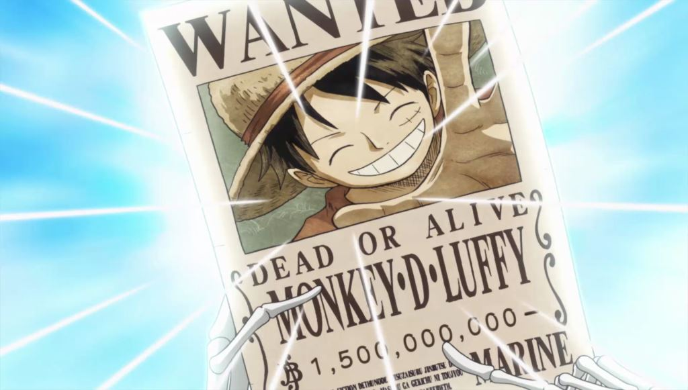
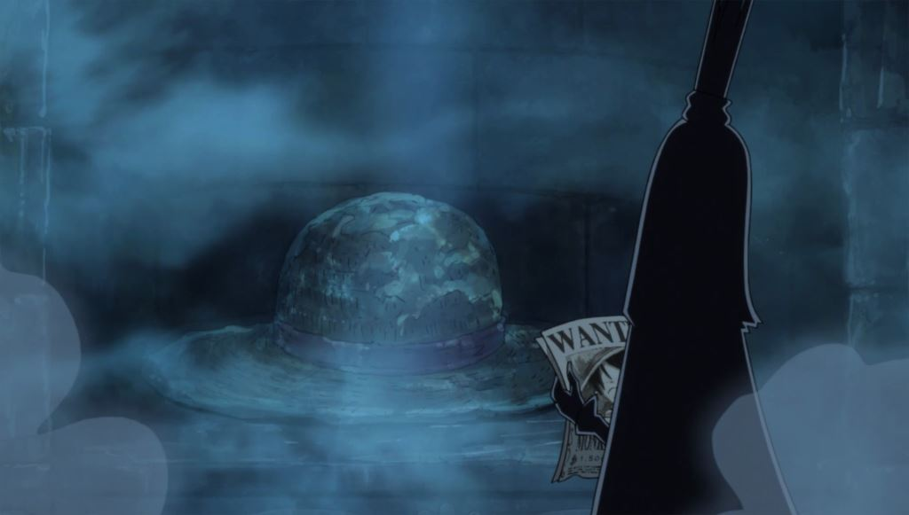
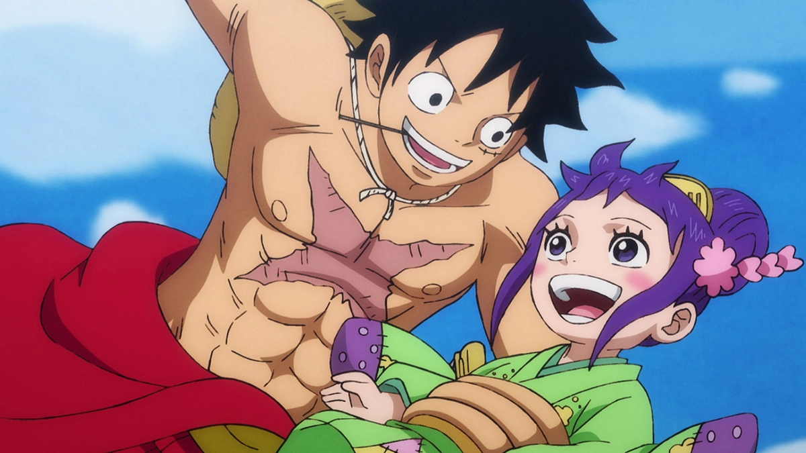
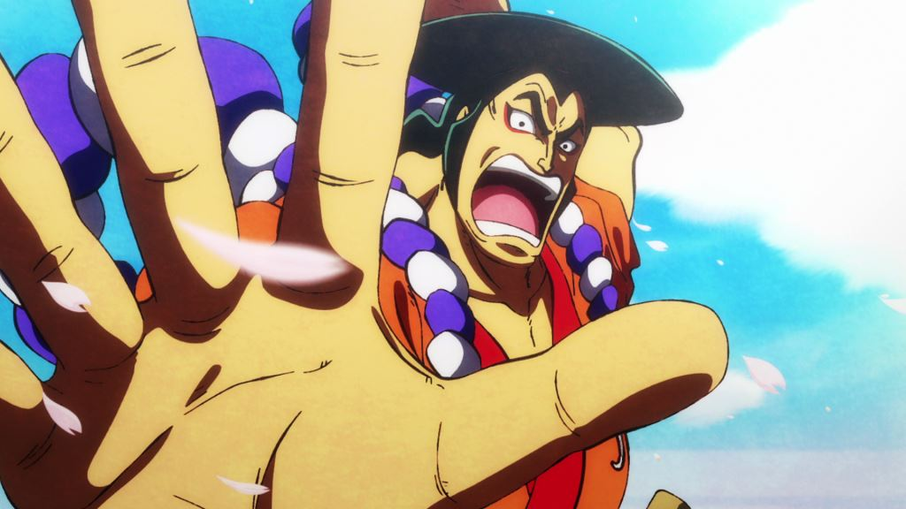
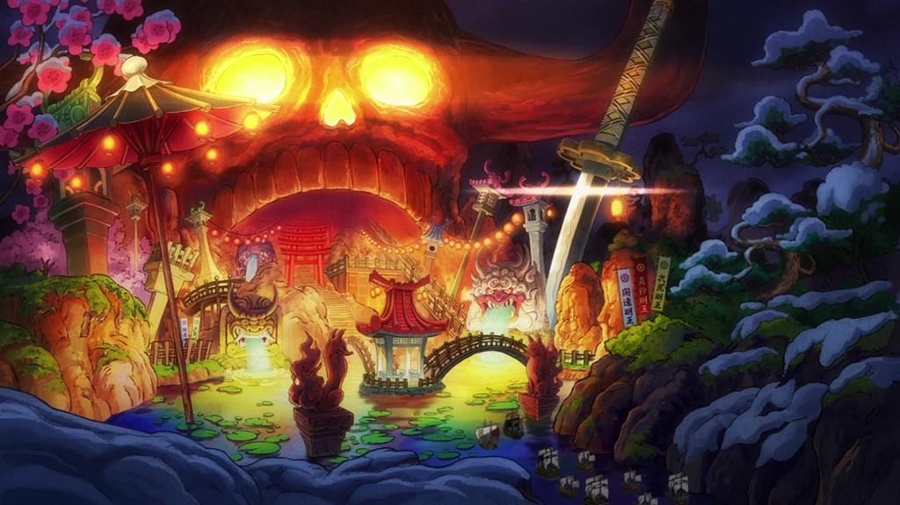
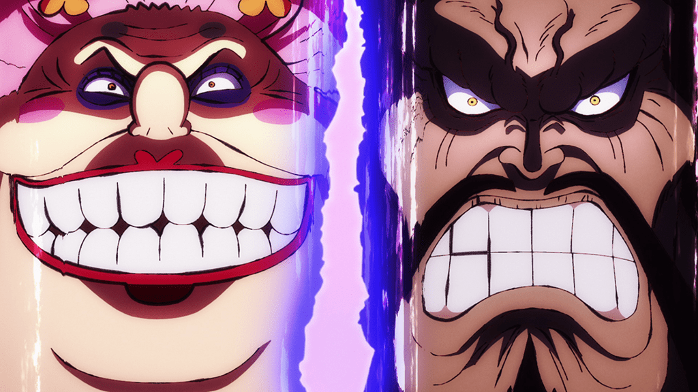
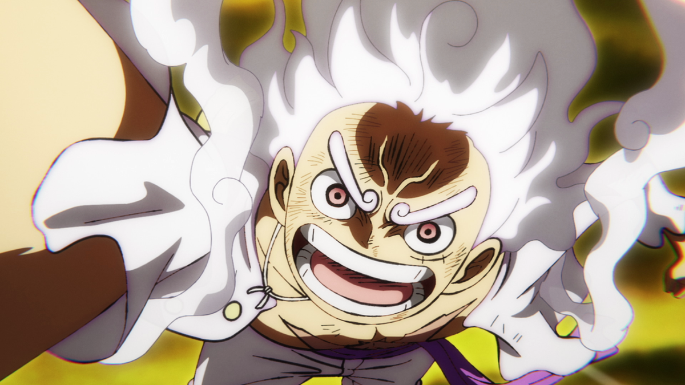

ワノ国編
５番目の皇帝
 ビッグ・マム暗殺未遂の主犯とされ、〝15億ベリー〟の賞金首となったルフィ。その活躍ぶりは世界中に知れ渡り、ルフィを〝四皇〟に続く５番目の〝海の皇帝〟と呼ぶ声も。
同じ頃、聖地マリージョアでは各国の王を招き、〝世界会議（レヴェリー）〟が開催されようとしていた。集まった顔ぶれの中には、アラバスタ王国のビビ、リュウグウ王国のしらほし、ドレスローザ王国のレベッカなど、麦わらの一味と関わりのある者も数多くいた。
さらにルフィの兄にして革命軍のNo.2であるサボも、仲間と共に密かにマリージョアに潜入していた。目的は革命軍の仲間であるバーソロミュー・くまの救出。くまは改造手術により人格を失い、天竜人から奴隷として扱われていた。
世界会議開幕
 ルフィの知り合いという事で、すぐに打ち解け合う各国の姫達。だがここで事件が発生。しらほしが、天竜人・チャルロス聖に捕まってしまったのだ。激高したネプチューン王が手をあげようとしたその瞬間、一人の男がチャルロス聖を殴り飛ばし、しらほしを救う。その男とは、10年前リュウグウ王国に漂着し、しらほしの母・オトヒメによって救われた天竜人、ドンキホーテ・ミョスガルド聖。かつては他の天竜人同様、傲慢な性格であったが、オトヒメの言葉に諭され、今では改心していた。
一方、マリージョアにあるパンゲア城では、シャンクスが世界政府の最高権力者たる〝五老星〟に面会していた。そしてついに世界会議が開幕。各国の王達が世界について語り合う中、城内の「虚（から）の玉座」で〝イム〟と呼ばれる謎の人物に謁見する五老星。何人たりとも座る事を許されぬはずの玉座に腰を下ろし、無言で五老星と対峙するイム。「歴史より消すべき〝灯（ともしび）〟」とは、果たして誰を指しているのか…？
侍の国の冒険
 ビッグ・マムの猛追から逃れ、ワノ国を目指すルフィ達。
ただならぬ海流と悪天候のなか、なんとか入国を果たすも、仲間とはぐれ一人「九里ヶ浜」に流れ着いたルフィは何者かに襲われていたワノ国の少女・お玉と出会う。
助けてもらった恩返しがしたい、とお玉の家に招かれたルフィは、そこで〝四皇〟カイドウ率いる百獣海賊団の支配により、ワノ国の人々が飢えに苦しんでいる惨状を知る。
その後、さらわれたお玉を救う為、偶然再会したゾロと共に百獣海賊団〝真打ち〟ホールデムのもとに乗り込むルフィ達。百獣海賊団の暴挙を目の当たりにしたルフィは、怒りの一撃でホールデムを撃破。救出したお玉へ「お前が毎日腹いっぱいメシ食える国にしてやる!!!」と約束するのだった。
大名と家臣
 ワノ国に潜伏していたローと合流して「おでん城跡」へ向かい、錦えもんやモモの助、ナミ達と再会したルフィ。そこで錦えもんから、実は自分達は「20年前のワノ国より時を超えてやってきた」という、驚きの事実を告げられる。
錦えもんの口から語られたのは、主君・光月おでんの豪快な生き様と、その壮絶な最期。そして20年前にカイドウ、黒炭オロチによっておでんが処刑された後、錦えもんはモモの助達と共に、おでんの妻・トキの能力によって20年後となる現在の世界へと飛ばされたというのだ。カイドウを倒し、おでんの遺志を受け継いでワノ国を〝開国〟させる為に…。
打倒カイドウの為、鬼ヶ島への討入りを2週間後の〝火祭りの夜〟と決めた錦えもん。戦力は麦わらの一味、ハートの海賊団、ミンク族、そして反乱の意志を持つ侍達。ルフィ達は各々、討入りに向けて動き出す。
いざ、鬼ヶ島！！
 そしてついに訪れた、決行の時――。
しかし、約束の港へと集まったのは錦えもんら、赤鞘の侍達のみ。実は現在のワノ国将軍・黒炭オロチのスパイであったカン十郎の裏切りによって作戦はバレてしまっていた。鬼ヶ島到達前に窮地に陥る錦えもん達…。
だが、ルフィ、ロー、キッドら海賊達によって危機を打破。道中、遅れてやってきたジンベエを正式に仲間に加えた〝麦わらの一味〟を筆頭に、約5千400の軍勢が鬼ヶ島に上陸した。
新鬼ヶ島計画
 一方 鬼ヶ島の城内では、カイドウが〝ひとつなぎの大秘宝(ワンピース)〟を獲りに行くべく、麦わらの一味を追ってワノ国に上陸したビッグ・マムと「海賊同盟」を結成。手始めにモモの助を処刑してワノ国を滅ぼし、実子ヤマトを新将軍にすえた海賊の帝国「新鬼ヶ島」を作る計画を実行に移そうとしていた。
しかし、カイドウを嫌い光月おでんに憧れるヤマトはルフィ達と共に戦うことを決意。さらに、錦えもん達がカイドウへの奇襲に成功、ルフィが〝全面戦争〟を高らかに宣言。かくして戦いの火ぶたが切って落とされた。
終幕
 亡き主君・おでんから受け継いだ技で善戦するも、四皇・カイドウの前に倒れる錦えもん達。しかし、その無念の想いはルフィが受け取った。ゾロ達は百獣海賊団幹部を、そしてローとキッドはビッグ・マムを撃破するなか、単身カイドウに挑むルフィ。四皇の圧倒的な力に一度は敗れかけるが、悪魔の実の新たな力が発現。〝ギア5〟と冠されたその〝自由〟な能力を駆使して、辛くもカイドウに勝利した。
ようやく平穏を取り戻したワノ国。モモの助は父・おでんの背中を追うことを決意し、新将軍となった。一方ルフィは、今回の件で懸賞金が30億ベリーに上がり、ついに四皇の一人に名を連ねることになった。
カイドウ＆ビッグ・マムの敗北、そして新たな「皇帝」の誕生に世界が揺らぐなか、〝麦わらの一味〟は侍達に別れを告げ、次の島を目指す。